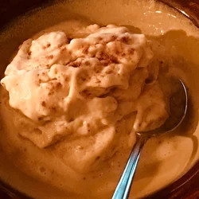

Home
Banana and Passionfruit Ice Cream

Vegan, eazy to do ice cream
Preparation time: around 20 minutes, plus overnight freezing
INGREDIENTS:
- 4 - bananas
- 5 - tablespoons fresh coconut water
- 2 - passionfruit
- 1 - tablespoon fresh lemon juice
- 1-2 - tablespoons agava or date syrup, to taste
- 2 tablespoons coconut flakes, to decorate
INSTRUCTION
- Slice the bananas and leave them in a sealed container in the freezer overnight.
- Blend thr frozen bananas with the coconut water until smooth.
- Cut the passionfruits in half, spoon out the pulp, and add it to the banana mixture along with lemon juice and chosen syrup.
- Puls for few seconds until combined.
- Put in previously frosted bowls, garnish with coconut flakes, and serve immediately
I wish you sweet moments.